MODEL
Lambda: 11.0
Dataset structure: 800 sequences with 100 features
Number of architectures in the best model: 11
Likelihood of best model: -96019.0608161
Architecture 1: 53 sequences with 9 important features
Sequence logo for the important positions in architecture 1
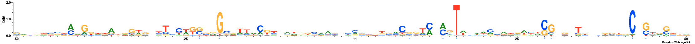
Architecture 2: 74 sequences with 10 important features
Sequence logo for the important positions in architecture 2
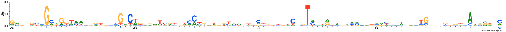
Architecture 3: 216 sequences with 10 important features
Sequence logo for the important positions in architecture 3
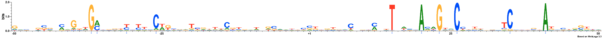
Architecture 4: 108 sequences with 10 important features
Sequence logo for the important positions in architecture 4
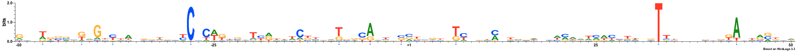
Architecture 5: 37 sequences with 9 important features
Sequence logo for the important positions in architecture 5
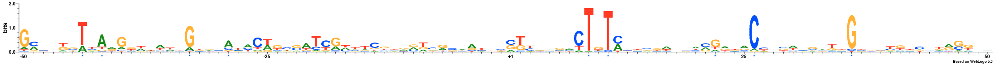
Architecture 6: 53 sequences with 9 important features
Sequence logo for the important positions in architecture 6
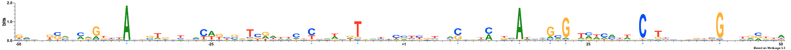
Architecture 7: 48 sequences with 9 important features
Sequence logo for the important positions in architecture 7
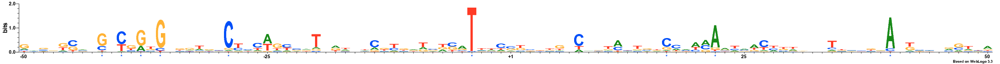
Architecture 8: 100 sequences with 10 important features
Sequence logo for the important positions in architecture 8
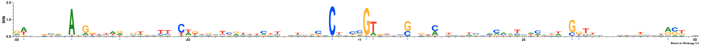
Architecture 9: 84 sequences with 9 important features
Sequence logo for the important positions in architecture 9
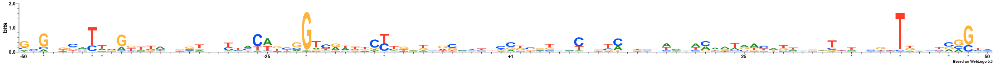
Architecture 10: 2 sequences with 0 important features
Sequence logo for the important positions in architecture 10
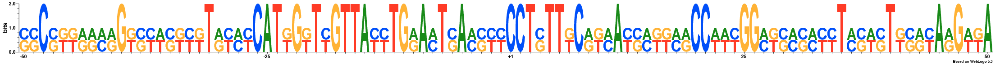
Architecture 11: 25 sequences with 7 important features
Sequence logo for the important positions in architecture 11
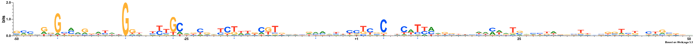
NOTE: All important positions in the logos are followed by an asterisk symbol and are coloured blue